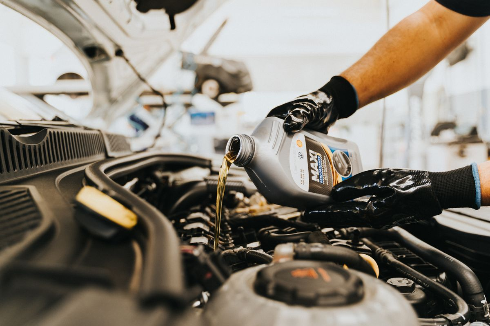
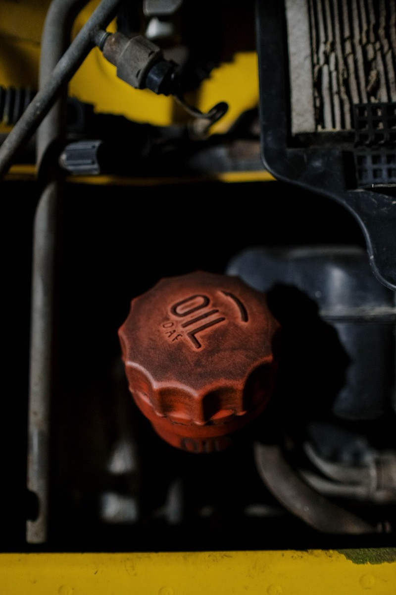
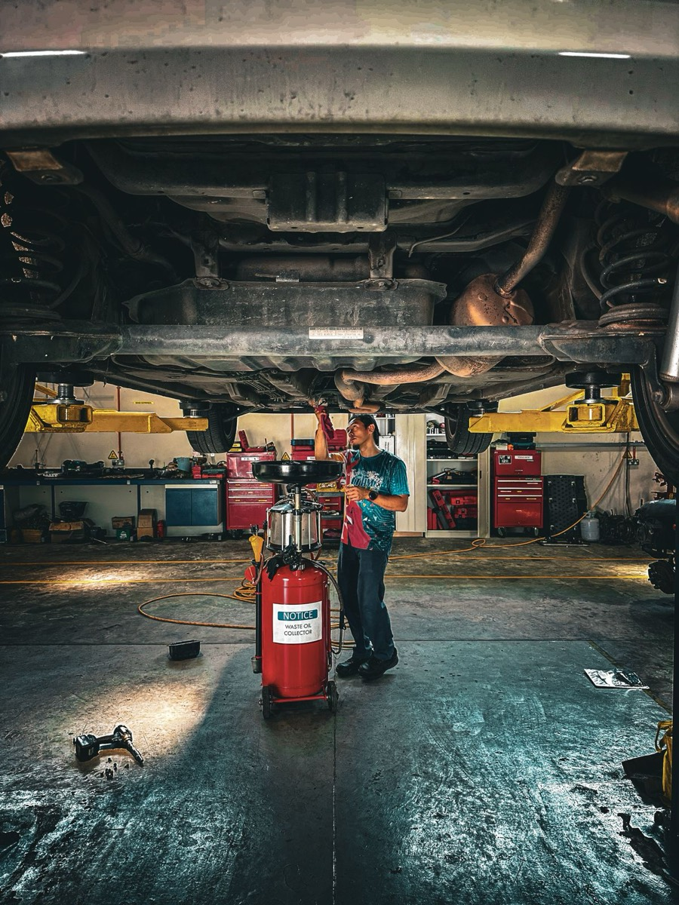

A New Diesel Oil Category Lands in 2027. Here's Which One Your Truck Needs.
Diesel oil is changing on January 1, 2027, and the part that matters for pickup owners is that it splits into two categories that are not interchangeable. If you run a Cummins, a Power Stroke or a Duramax, you want one of them and not the other. The new category is API PC-12, licensed as CL-4 and FB
Diesel oil splits into two categories on 1 January 2027 and they are not interchangeable. The new one is API PC-12, licensed as CL-4 and FB-4; running the wrong one in a Cummins, Power Stroke or Duramax is the mistake to avoid.
API approved PC-12 to support the EPA’s 2027 heavy-duty rules, which require a 50% cut in particulates and up to a 90% cut in nitrogen oxides — the oil is doing emissions work, not just lubrication work.

Diesel oil is changing on January 1, 2027, and the part that matters for pickup owners is that it splits into two categories that are not interchangeable. If you run a Cummins, a Power Stroke or a Duramax, you want one of them and not the other.
The new category is API PC-12, licensed as CL-4 and FB-4. The American Petroleum Institute approved it to support the EPA’s 2027 heavy-duty emissions rules, which require a 50% cut in particulates and up to a 90% cut in nitrogen oxides from current limits.
What the two categories actually are
Most coverage presents CL-4 and FB-4 as “the new diesel oils” and leaves it there. They are not the same product, and the difference is viscosity.
API CL-4 is the one for pickups. It carries high-temperature, high-shear viscosity profiles — meaning it holds its film under the heat and load a turbo-diesel pickup puts on it.
API FB-4 is ultra-low viscosity. That is a feature for a modern heavy-duty truck engineered around it, and a liability in an engine whose oil pump, bearings and clearances were not. Put FB-4 in a Cummins that expects CL-4 and you have a thinner film than the engine was designed for.
If you own a diesel pickup, look for CL-4.

Why the oil had to change at all
The short version is that engine oil ends up in the exhaust.
Some oil is consumed in normal operation and leaves through the tailpipe. Whatever ash-forming additives it carried go with it, and that ash accumulates in the diesel particulate filter. This is not a theory — it is the constraint that has shaped diesel oil since DPFs arrived between 2007 and 2010.
Shawn Whitacre, principal engineer at Chevron Lubricants, described the shift on The Diesel Podcast: “we had to start learning how to do more with less. We actually had to, by requirement, start taking additive out and rebalancing these packages because there’s some amount of lube oil that gets consumed in the course of operation and ends up in the exhaust.”
The traditional anti-wear chemistry — zinc and phosphorus — and the traditional acid neutralisers, calcium and magnesium, all produce ash. PC-12 oils reduce or replace them. Chevron’s Delo 600 family, for example, uses synthetic dispersants and non-metallic anti-wear agents instead.
The practical benefit is fewer DPF regeneration events. A regen burns fuel to cook soot out of the filter; every regen you avoid is fuel you did not burn and heat you did not put into the aftertreatment system.

The backward-compatibility claim, read carefully
PC-12 is described as backward compatible, suitable for engines from 1998 to present. That is a broad claim and it is worth understanding what it does and does not mean.
It means the new oils are not going to damage an older engine by being chemically wrong for it. It does not mean the new oil is the best choice for an older engine, and it does not override what your owner’s manual specifies. If your 2006 Cummins calls for a particular spec, a 2027 oil that meets a newer spec does not automatically satisfy it.
The other thing backward compatibility does not cover is the FB-4 viscosity issue. An oil can be chemically compatible with an engine and still be the wrong thickness for its oil pump.
What this means if you are shopping now
Nothing, yet. The oils are not on shelves. Licensing begins January 1, 2027, the same date the EPA 2027 standards take effect.
What you can do before then is check the cap and the manual and write down the current spec your truck calls for. When the new containers appear with the CL-4 and FB-4 certification marks, you will be comparing against something specific rather than guessing from a label.
Expect a transition period where both the old and new categories are sold side by side. That is normal for an oil category change — the previous category does not disappear the day the new one is licensed.
If you are in the middle of an oil change right now, this changes nothing. Buy the spec your manual names. The reason to read about PC-12 at all is so that the first time you see an unfamiliar mark on a jug, you already know which of the two you want.
The trap in “backward compatible”
Backward compatibility is the phrase most likely to cause a problem, because it is true and easy to over-read.
An oil can be chemically fine for an engine and still be the wrong grade. The compatibility claim addresses chemistry — will these additives harm an older engine — not viscosity. Those are separate questions, and FB-4 fails the second one for engines that want CL-4.
The same applies across the old categories. An engine built to an earlier spec is not automatically served by a newer one. Meeting a newer specification is not the same as meeting the specification the engine was designed against, and the manual is the thing that says which.
One more practical detail: the transition period will have both categories on the shelf at once, and some stores will keep stocking the old one for years because plenty of trucks still call for it. An older category disappearing is not a sign you should switch — it is a sign to check whether the replacement actually covers your engine.
The marks to look for
API will print two certification marks on containers: FB-4 and CL-4. They identify which of the two categories is inside.
This matters because both are “PC-12” in conversation, and a counter person or a forum post saying “the new diesel oil” is not telling you which of the two you are holding. Read the mark, not the marketing copy.
What we could not verify
We have not seen these oils, tested them, or run them in anything. No independent wear or DPF-loading data has been published that we could find.
The specific formulations described here — synthetic dispersants and non-metallic anti-wear agents in Chevron’s Delo 600 — come from the manufacturer’s own engineer describing them on a podcast. We could not independently verify the chemistry or the claimed reduction in regeneration frequency.
We also could not confirm pricing, container sizes, or which brands will have CL-4 product on shelves on day one.
Sources: The Drive, “New Diesel Engine Oil Blends Are Designed to Keep DPFs From Clogging So Darn Much,” reporting comments from Shawn Whitacre of Chevron Lubricants on The Diesel Podcast; API PC-12 category documentation and the CL-4 / FB-4 certification marks as described in publicly available Mobil, Chevron, Phillips 66 and Lubrizol specification summaries, checked November 14, 2026.
Topics
- Engine & Intake
- Duramax